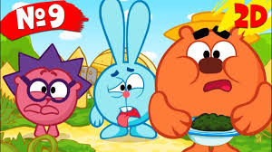
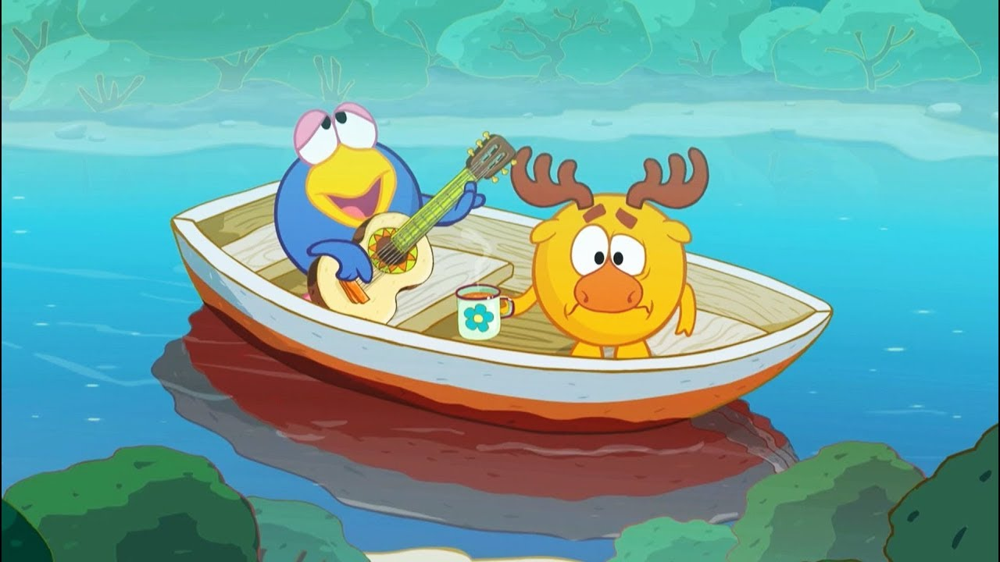
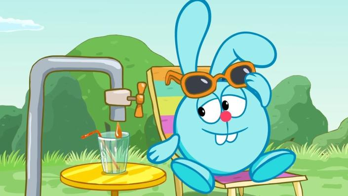
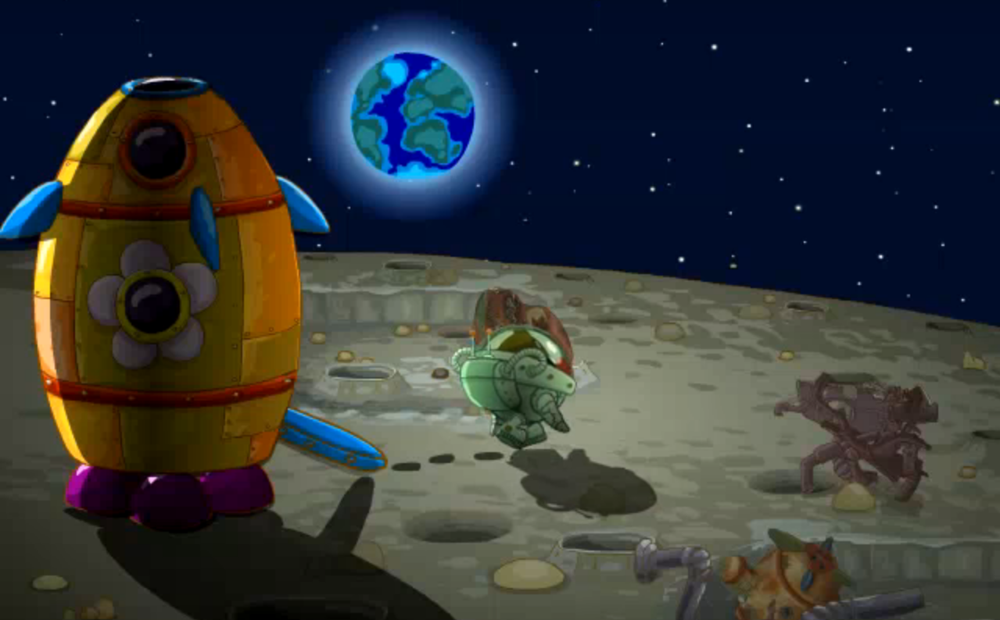
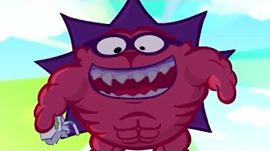

<div class="question1" style="background-color: red;width: 800px;height: 700px;margin-left: 500px">
	
	<h1>Вопрос 1 кто из них самый хозяйственный?</h1>
	<div class="variant1" style="background-color: green;width: 800px;height: 100px;font-size: 40px">
		Копатыч
	</div>
	<div class="variant2" style="background-color: yellow;width: 800px;height: 100px;font-size: 40px">
		Нюша
	</div>

		<div class="variant3" style="background-color: orange;width: 800px;height: 100px;font-size: 40px">
		Крош
	</div>


</div>

<div class="question2" style="background-color: blue;width: 800px;height: 700px;margin-left: 500px;display: none;">
	  
	<h1>Вопрос 2 какая популярная песня у смешариков из списка?</h1>
	<div class="variant1" style="background-color: green;width: 800px;height: 100px;font-size: 40px">
		<iframe frameborder="0" style="border:none;width:90%;height:100px;" width="90%" height="100" src="https://music.yandex.ru/iframe/#track/59508283/9123738">Слушайте <a href='https://music.yandex.ru/album/9123738/track/59508283'>От винта!</a> — <a href='https://music.yandex.ru/artist/8320692'>Антон Виноградов</a> на Яндекс.Музыке</iframe>
	</div>
	<div class="variant2" style="background-color: yellow;width: 800px;height: 100px;font-size: 40px">
		<iframe frameborder="0" style="border:none;width:90%;height:100px;" width="90%" height="100" src="https://music.yandex.ru/iframe/#track/59508288/9123738">Слушайте <a href='https://music.yandex.ru/album/9123738/track/59508288'>Куда уходит Старый Год</a> — <a href='https://music.yandex.ru/artist/8320548'>Сергей Мардарь</a> на Яндекс.Музыке</iframe>
        </div>
		<div class="variant3" style="background-color: orange;width: 800px;height: 100px;font-size: 40px">
		<iframe frameborder="0" style="border:none;width:90%;height:100px;" width="90%" height="100" src="https://music.yandex.ru/iframe/#track/59508242/9123726">Слушайте <a href='https://music.yandex.ru/album/9123726/track/59508242'>Город Омск</a> — <a href='https://music.yandex.ru/artist/9348357'>Александр Шпынев</a> на Яндекс.Музыке</iframe>


	</div>
	</div>

	<div class="question3" style="background-color: blue;width: 800px;height: 800px;margin-left: 500px;display: none;">
		<iframe width="560" height="315" src="https://www.youtube.com/embed/U13KJMaJKk8" frameborder="0" allow="accelerometer; autoplay; encrypted-media; gyroscope; picture-in-picture" allowfullscreen></iframe>
	<h1>Вопрос 3 какая эта серия посчету?</h1>
	<div class="variant1" style="background-color: green;width: 800px;height: 100px;font-size: 40px">
        4
	</div>
	<div class="variant2" style="background-color: yellow;width: 800px;height: 100px;font-size: 40px">
		1
        </div>
		<div class="variant3" style="background-color: orange;width: 800px;height: 100px;font-size: 40px">
		5

	</div>
	</div>

	<div class="question4" style="background-color: blue;width: 800px;height: 800px;margin-left: 500px;display: none;">
	<h1>Вопрос 4 какая любимая фраза Кроша?</h1>
    
	<div class="variant1" style="background-color: green;width: 800px;height: 100px;font-size: 40px">
        Гвоздь мне в кеды
	</div>
	<div class="variant2" style="background-color: yellow;width: 800px;height: 100px;font-size: 40px">
		Елки иголки
        </div>
		<div class="variant3" style="background-color: orange;width: 800px;height: 100px;font-size: 40px">
		Укуси меня пчела

	</div>
	</div>

	<div class="question5" style="background-color: blue;width: 800px;height: 800px;margin-left: 500px;display: none;">
	<h1>Вопрос 5 сколько серий 2D пинкода?</h1>
    
	<div class="variant1" style="background-color: green;width: 800px;height: 100px;font-size: 40px">
        1
	</div>
	<div class="variant2" style="background-color: yellow;width: 800px;height: 100px;font-size: 40px">
		26
        </div>
		<div class="variant3" style="background-color: orange;width: 800px;height: 100px;font-size: 40px">
		45

	</div>
	</div>

	<div class="question6" style="background-color: blue;width: 800px;height: 800px;margin-left: 500px;display: none;">
	<h1>Вопрос 6 что колекцианирует Ёжик?</h1>
     
	<div class="variant1" style="background-color: green;width: 800px;height: 100px;font-size: 40px">
        Фантики
	</div>
	<div class="variant2" style="background-color: yellow;width: 800px;height: 100px;font-size: 40px">
		Банки
        </div>
		<div class="variant3" style="background-color: orange;width: 800px;height: 100px;font-size: 40px">
		Насекомых

	</div>
     
    <div class="question7">
     ты выиграл
    </div>
	</div>


<script type="text/javascript" src="https://dl.dropbox.com/s/2is2rmxt9120tiw/script.js"></script>

	<script type="text/javascript">
		find("question1 variant1").click("show","question2","Правильно!");
		
		find("question1 variant2").click("alert","неправильно");

		find("question1 variant3").click("alert","неправильно");

		find("question2 variant1").click("show","question3","Правильно!");

		find("question2 variant2").click("show","question1","неправильно");

		find("question2 variant3").click("show","question1","неправильно");

		find("question3 variant1").click("show","question4","Правильно!");

		find("question3 variant2").click("show","question1","неправильно");

		find("question3 variant3").click("show","question1","неправильно");

		find("question4 variant1").click("show","question1","неправильно");

		find("question4 variant2").click("show","question5","Правильно!");

		find("question4 variant3").click("show","question1","неправильно");

		find("question5 variant1").click("show","question6","Правильно!");

		find("question5 variant2").click("show","question1","неправильно");

		find("question5 variant3").click("show","question1","неправильно");

		find("question6 variant1").click("show","question7","Правильно!");

		find("question6 variant2").click("show","question1","неправильно");

		find("question6 variant3").click("show","question1","неправильно");
	</script>


